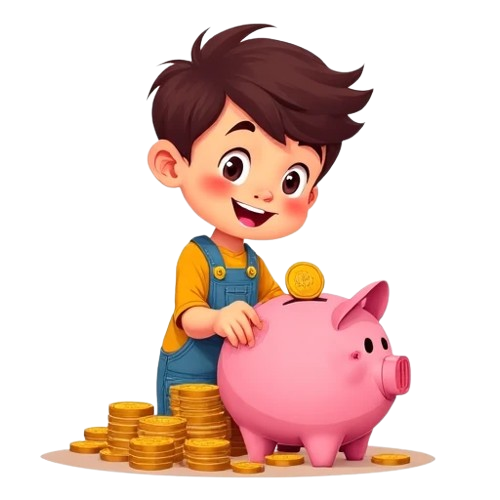
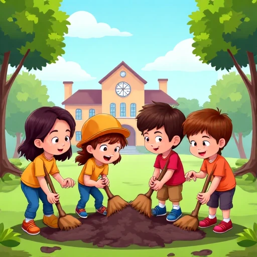
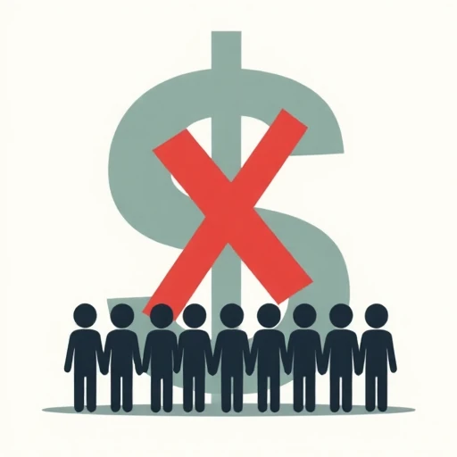
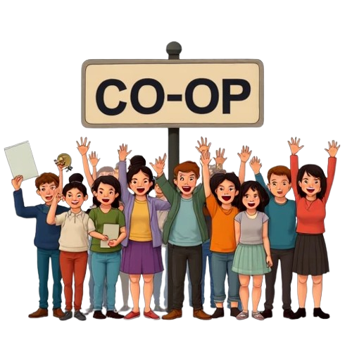

บทที่ 1: สหกรณ์คืออะไรนะ?

สวัสดีครับน้องๆ! วันนี้พี่ออมตังค์กับน้องปันผลจะพาทุกคนไปรู้จักกับคำว่า "สหกรณ์" กันครับ!
ใช่แล้วค่ะ! "สหกรณ์" เนี่ย ไม่ใช่เรื่องไกลตัวเลยนะ สนุกแล้วก็ได้ประโยชน์ด้วย พร้อมกันรึยังคะ?
เอ๊ะ...ปัญหาแบบนี้ เคยเจอกันไหมนะ?
- ✏️ ดินสอหายบ่อย ไม่มีสำรองใช้เลย
- ⚽ อยากเล่นฟุตบอลกับเพื่อนๆ แต่ไม่มีใครมีลูกบอล
- 🧹 ห้องเรียนไม่ค่อยสะอาด เพราะไม้กวาดเก่าแล้ว
น้องๆ เคยเจอปัญหาไหนบ้าง ลองคลิกเลือกดูสิ:
ดินสอหาย: 0 คน
ไม่มีลูกบอล: 0 คน
ไม้กวาดเก่า: 0 คน
ถ้าเจอปัญหา เราจะทำยังไงกันดีนะ?
"รวมพลัง" แก้ปัญหาดีกว่า!
ตัวอย่างที่ 1: ถ้าทุกคนในกลุ่มช่วยกันออกเงินคนละนิด ก็ซื้อลูกบอลมาเล่นด้วยกันได้นะ!
ตัวอย่างที่ 2: แบ่งเวรกันทำความสะอาดห้องเรียน คนละไม้คนละมือ ห้องก็สะอาดน่าอยู่!
จับคู่ปัญหา กับ วิธีแก้ปัญหา!
เห็นไหมครับ? การ "ทำงานร่วมกัน" และ "ช่วยเหลือกัน" เนี่ย ช่วยให้เราแก้ปัญหาได้เยอะเลย!
สหกรณ์ก็คือ... แบบนี้นี่เอง!
"สหกรณ์" คือ การที่คนหลายๆ คน (ตั้งแต่ 10 คนขึ้นไปสำหรับสหกรณ์จริงๆ) ที่มีปัญหาหรือความต้องการคล้ายๆ กัน...
- สมัครใจ มารวมกลุ่มกัน
- ทำงานร่วมกัน และ ช่วยเหลือซึ่งกันและกัน
- เพื่อแก้ไขปัญหานั้นๆ หรือทำให้ชีวิตดีขึ้น โดยเน้นประโยชน์ของทุกคนในกลุ่ม
พอจะเข้าใจแล้วใช่ไหมคะว่าสหกรณ์คืออะไร? ง่ายนิดเดียวเอง!
แล้ว "สหกรณ์" สำคัญกับเรายังไงนะ?
ลองลากประโยชน์ไปใส่ในกลุ่มที่ถูกต้องดูสิ!
ประโยชน์ต่อตนเอง 🙋♂️🙋♀️
ประโยชน์ต่อส่วนรวม 👨👩👧👦🏫
ลักษณะสำคัญของสหกรณ์ (แบบง่ายๆ)
-  รวมคน ไม่ใช่แค่รวมเงิน: หัวใจสำคัญคือ "คน" ที่มาร่วมมือกัน
-  ทุกคนเป็นเจ้าของร่วมกัน: ทุกคนในสหกรณ์มีสิทธิมีเสียงเท่าเทียมกัน
 ทุกคนได้รับประโยชน์: สหกรณ์ทำเพื่อประโยชน์ของสมาชิกทุกคน
ทุกคนได้รับประโยชน์: สหกรณ์ทำเพื่อประโยชน์ของสมาชิกทุกคน
นี่เป็นแค่ส่วนหนึ่งของความเป็นสหกรณ์นะครับ ยังมีเรื่องน่ารู้อีกเยอะเลย!
มาทบทวนความเข้าใจกันหน่อย!
1. "สหกรณ์" คืออะไรเป็นหลัก?
2. ถ้าเพื่อนๆ ในห้องไม่มีลูกบอลเล่น แล้วช่วยกันเก็บเงินซื้อ แบบนี้เรียกว่าเป็นวิธีการแบบสหกรณ์ได้ไหม?
3. ข้อใด ไม่ใช่ ประโยชน์ของสหกรณ์ต่อตนเอง?
4. สหกรณ์เน้นการรวมอะไรเป็นสำคัญที่สุด?
5. เมื่อเข้าร่วมสหกรณ์ ทุกคนเป็นอะไรในสหกรณ์นั้น?